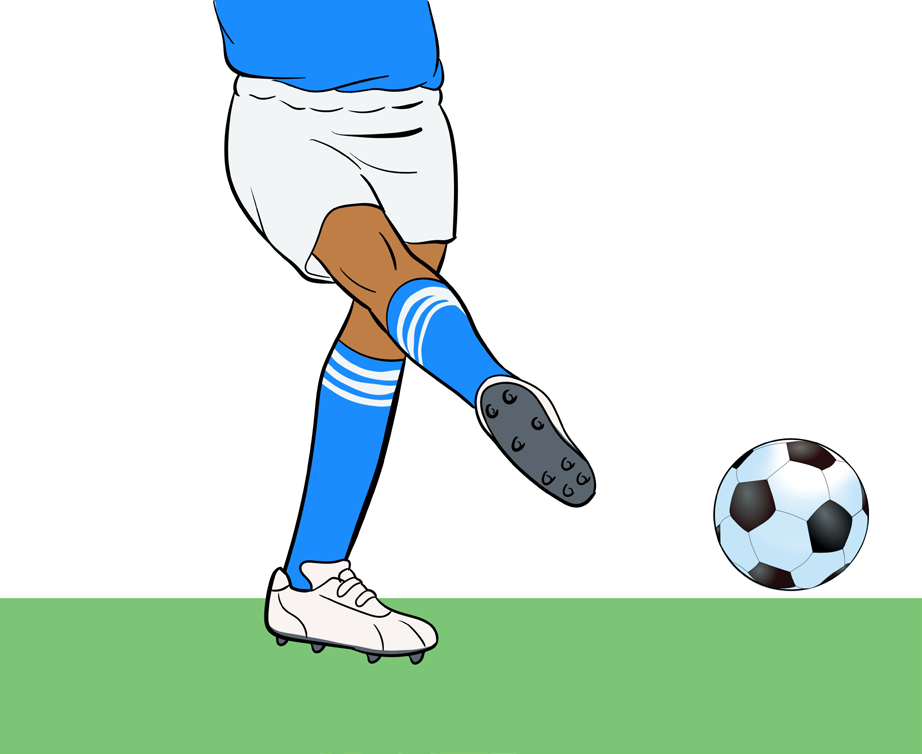

Push pass
Push pass is also known as the direct pass or the forward pass. It refers to a pass that originates from the inside of the player’s foot over a short distance. Follow these steps to perform push pass:
(i)Keep arms swing free parallel to the kicking leg;
(ii)Place the pivot foot beside the ball;
(iii)Keep the kicking ankle firm and the body over the ball;
(iv)Kick using the inside of foot; and
(v)Follow through, as shown in Figure 4.7.

Instep pass
It is the type of pass that involves kicking the ball with the upper part of the foot. It is used for long passes or shots to switch the direction of the ball or to attack. Follow these steps to perform instep pass:
Activity 4.7
Using various drills, practise push pass repetitively to master the skill.
Question:
Why it is important to keep the pivot foot beside the ball before kicking?